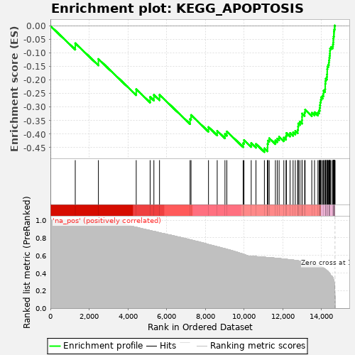
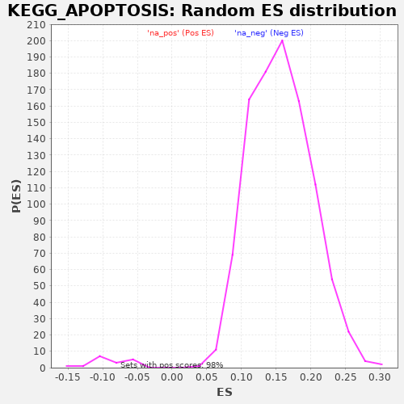

| | | Dataset | drug_embeddings_gsea |
| Phenotype | NoPhenotypeAvailable |
| Upregulated in class | na_neg |
| GeneSet | KEGG_APOPTOSIS |
| Enrichment Score (ES) | -0.4660474 |
| Normalized Enrichment Score (NES) | -5.246178 |
| Nominal p-value | 0.0 |
| FDR q-value | 0.0 |
| FWER p-Value | 0.0 |
Table: GSEA Results Summary

Fig 1: Enrichment plot: KEGG_APOPTOSIS
Profile of the Running ES Score & Positions of GeneSet Members on the Rank Ordered List
| PROBE | GENE SYMBOL | GENE_TITLE | RANK IN GENE LIST | RANK METRIC SCORE | RUNNING ES | CORE ENRICHMENT | | 1 | CHP2 | | | 1283 | 1.000 | -0.0642 | No |
| 2 | ENDOD1 | | | 2478 | 1.000 | -0.1224 | No |
| 3 | IRAK3 | | | 4431 | 0.920 | -0.2343 | No |
| 4 | IL1A | | | 5149 | 0.883 | -0.2625 | No |
| 5 | IL1RAP | | | 5343 | 0.873 | -0.2551 | No |
| 6 | PRKX | | | 5633 | 0.858 | -0.2547 | No |
| 7 | IL3 | | | 7212 | 0.778 | -0.3444 | No |
| 8 | PIK3R5 | | | 7260 | 0.776 | -0.3293 | No |
| 9 | PRKACB | | | 8162 | 0.724 | -0.3739 | No |
| 10 | NGF | | | 8612 | 0.699 | -0.3882 | No |
| 11 | IL1R1 | | | 9013 | 0.676 | -0.3996 | No |
| 12 | PRKAR1B | | | 9109 | 0.670 | -0.3903 | No |
| 13 | IL3RA | | | 9951 | 0.614 | -0.4334 | No |
| 14 | EXOG | | | 9995 | 0.611 | -0.4219 | No |
| 15 | MYD88 | | | 10368 | 0.590 | -0.4335 | No |
| 16 | PPP3R1 | | | 10613 | 0.587 | -0.4364 | No |
| 17 | IRAK2 | | | 11048 | 0.579 | -0.4524 | Yes |
| 18 | AKT3 | | | 11209 | 0.576 | -0.4498 | Yes |
| 19 | PRKACG | | | 11214 | 0.576 | -0.4365 | Yes |
| 20 | PRKAR2B | | | 11231 | 0.576 | -0.4240 | Yes |
| 21 | PIK3CD | | | 11299 | 0.574 | -0.4151 | Yes |
| 22 | PIK3CG | | | 11617 | 0.568 | -0.4234 | Yes |
| 23 | IL1B | | | 11714 | 0.566 | -0.4166 | Yes |
| 24 | PIK3CB | | | 11808 | 0.564 | -0.4097 | Yes |
| 25 | NTRK1 | | | 12052 | 0.558 | -0.4131 | Yes |
| 26 | PRKAR2A | | | 12165 | 0.556 | -0.4077 | Yes |
| 27 | ENDOG | | | 12186 | 0.555 | -0.3960 | Yes |
| 28 | PPP3R2 | | | 12374 | 0.551 | -0.3958 | Yes |
| 29 | PPP3CC | | | 12530 | 0.547 | -0.3935 | Yes |
| 30 | CAPN2 | | | 12644 | 0.543 | -0.3885 | Yes |
| 31 | CSF2RB | | | 12767 | 0.539 | -0.3841 | Yes |
| 32 | PPP3CB | | | 12788 | 0.539 | -0.3728 | Yes |
| 33 | IRAK1 | | | 12797 | 0.538 | -0.3607 | Yes |
| 34 | CASP6 | | | 12881 | 0.536 | -0.3537 | Yes |
| 35 | TRADD | | | 12990 | 0.530 | -0.3486 | Yes |
| 36 | AIFM1 | | | 12994 | 0.530 | -0.3363 | Yes |
| 37 | DFFA | | | 12996 | 0.530 | -0.3239 | Yes |
| 38 | TNFRSF10C | | | 13124 | 0.525 | -0.3202 | Yes |
| 39 | IRAK4 | | | 13151 | 0.524 | -0.3096 | Yes |
| 40 | CAPN1 | | | 13495 | 0.506 | -0.3212 | Yes |
| 41 | PIK3CA | | | 13636 | 0.498 | -0.3190 | Yes |
| 42 | PRKAR1A | | | 13813 | 0.485 | -0.3196 | Yes |
| 43 | AKT2 | | | 13873 | 0.480 | -0.3124 | Yes |
| 44 | APAF1 | | | 13902 | 0.478 | -0.3030 | Yes |
| 45 | BIRC3 | | | 13918 | 0.475 | -0.2929 | Yes |
| 46 | FADD | | | 13932 | 0.474 | -0.2826 | Yes |
| 47 | PIK3R3 | | | 13963 | 0.471 | -0.2736 | Yes |
| 48 | PIK3R2 | | | 13979 | 0.469 | -0.2635 | Yes |
| 49 | TNFRSF10B | | | 14056 | 0.462 | -0.2579 | Yes |
| 50 | TNF | | | 14096 | 0.457 | -0.2498 | Yes |
| 51 | CYCS | | | 14106 | 0.455 | -0.2397 | Yes |
| 52 | TNFRSF10A | | | 14180 | 0.444 | -0.2342 | Yes |
| 53 | DFFB | | | 14189 | 0.443 | -0.2243 | Yes |
| 54 | NFKBIA | | | 14190 | 0.442 | -0.2139 | Yes |
| 55 | BIRC2 | | | 14201 | 0.441 | -0.2042 | Yes |
| 56 | BAD | | | 14218 | 0.438 | -0.1950 | Yes |
| 57 | CASP7 | | | 14274 | 0.429 | -0.1886 | Yes |
| 58 | CHUK | | | 14282 | 0.426 | -0.1791 | Yes |
| 59 | TNFRSF1A | | | 14291 | 0.425 | -0.1696 | Yes |
| 60 | RIPK1 | | | 14292 | 0.425 | -0.1596 | Yes |
| 61 | FAS | | | 14302 | 0.423 | -0.1503 | Yes |
| 62 | FASLG | | | 14343 | 0.414 | -0.1432 | Yes |
| 63 | CASP10 | | | 14375 | 0.407 | -0.1358 | Yes |
| 64 | TNFRSF10D | | | 14385 | 0.405 | -0.1268 | Yes |
| 65 | IKBKB | | | 14402 | 0.399 | -0.1185 | Yes |
| 66 | CFLAR | | | 14415 | 0.396 | -0.1100 | Yes |
| 67 | IKBKG | | | 14430 | 0.392 | -0.1017 | Yes |
| 68 | BID | | | 14435 | 0.389 | -0.0928 | Yes |
| 69 | TNFSF10 | | | 14440 | 0.388 | -0.0839 | Yes |
| 70 | PIK3R1 | | | 14486 | 0.366 | -0.0784 | Yes |
| 71 | XIAP | | | 14569 | 0.355 | -0.0757 | Yes |
| 72 | PRKACA | | | 14588 | 0.345 | -0.0688 | Yes |
| 73 | BAX | | | 14599 | 0.339 | -0.0615 | Yes |
| 74 | CASP9 | | | 14609 | 0.333 | -0.0542 | Yes |
| 75 | TRAF2 | | | 14610 | 0.333 | -0.0464 | Yes |
| 76 | NFKB1 | | | 14621 | 0.322 | -0.0395 | Yes |
| 77 | BCL2L1 | | | 14637 | 0.305 | -0.0333 | Yes |
| 78 | CASP8 | | | 14639 | 0.303 | -0.0263 | Yes |
| 79 | BCL2 | | | 14642 | 0.302 | -0.0193 | Yes |
| 80 | ATM | | | 14657 | 0.276 | -0.0137 | Yes |
| 81 | CASP3 | | | 14673 | 0.233 | -0.0093 | Yes |
| 82 | RELA | | | 14675 | 0.231 | -0.0039 | Yes |
| 83 | AKT1 | | | 14676 | 0.227 | 0.0014 | Yes |
| 84 | TP53 | | | 14698 | 0.000 | -0.0000 | Yes |
Table: GSEA details [plain text format]

Fig 2: KEGG_APOPTOSIS: Random ES distribution
Gene set null distribution of ES for KEGG_APOPTOSIS